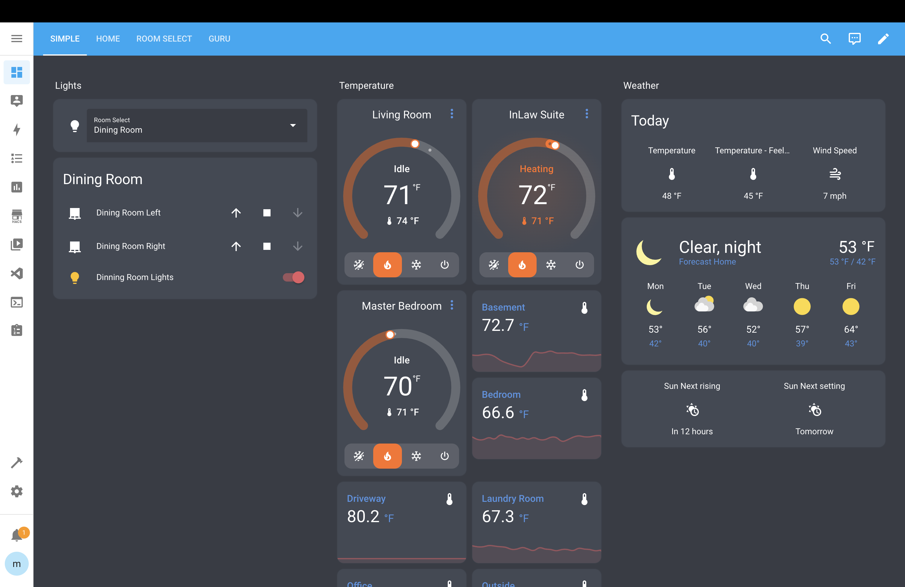

Home automation system
Implemented a home automation system that integrates over 150 smart devices
from various ecosystems into a unified control hub using a Raspberry Pi server.
This setup allows for the management of lighting, security, climate control,
and entertainment systems through a single interface.
I configured automated routines, voice control, and remote access to enhance
convenience and efficiency, transforming the home into a
responsive environment tailored to daily needs.

Built & modified a 3D printer
Installed an Ender 3 v2 3D printer and undertook several upgrades to enhance
its capabilities. First, Also, added a CR Touch for automatic bed leveling, which
significantly improves print accuracy and reduces the need for manual adjustments.
Next, I upgraded to a Direct Drive extrusion system, allowing the printer to
handle a wider range of materials, including flexible filaments, with greater
precision. Additionally, I installed an extra Z-axis to stabilize the printer's
movements, resulting in smoother and more reliable prints. These enhancements
collectively improve the printer's performance, making it more versatile and
efficient for various 3D printing projects.